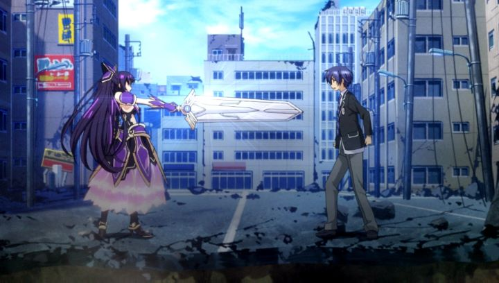

Disclaimer: This review covers Season 1 of the anime "Date A Live."When it comes to anime, especially in the early 2010's, it can seem like a show isn't even trying. A core premise can seem like it was written in an instant in order to start production on "something" to bring in money; a weak and convoluted premise that relies on the strength of its characters to keep viewers invested. "Date A Live" is exactly such a show, even though the anime is technically based on an existing light novel series that's still being written to this day. In this case, the premise is effectively this: high school boy has to take a bunch of alien girls on dates to save the world, complete with real-world decision prompts. It's a real-life romance visual novel!Of course, the show tries to give more context than that. In some undefined near future, "spatial quakes" are a common phenomena in the world, causing massive destruction and killing millions when they occur. Shidoh Itsuka is a normal guy who sees a strange-looking girl at the base of a recent quake: she was the cause. Quickly, Shidoh is whisked away by his younger sister, who fills him in: his sister Kotori is the lead commander of a secret organization tasked to reduced casualties caused by the mysterious girl(s), powerful beings from other dimensions, referred to as "Spirits." Some of the girls cause the destruction on purpose, but many are just emotionally unstable. So how can they save mankind? Shidoh must date each of the girls they come across, making them feel special and wanted. Kotori and her group keep watch and help manage each date Shidoh goes on, providing digital multiple-choice prompts for how to proceed, and recommendations to the right choice (or disgust when he makes a weird choice).Action and science-fiction elements aside, this is a blatant romantic-comedy. While the premise remains one of the dumbest I can recall... I still enjoyed the story well enough as it proceeded. It keeps things moving, right up to the final date, with a surprise girl that helps wrap up the show This review only covers Season 1, even though subsequent seasons and films have since released... the first season is plenty fine by itself, and there's no motivation to watch further unless you passionately worship the characters. Which you very well might: the characters are varied, fun, cute and/or cool, in that generic but effective way that anime can accomplish. Part of the fun is deciding who is the "best girl," a trait that "Date A Live" was perfectly made for. Do you like Tohka, the first Spirit saved, and clearly meant to be the "lead" romantic interest if there was one? Do you like Kotori, Shidoh's confident sister? Do you prefer the young, cute and shy one? Or the quiet but happily submissive one? Based on merchandise made available, Kurumi seems to be a fan favorite: with long dark hair, gothic frilly clothing, and eye pupils with different colors, she's violently sadistic and unpredictable... and arguably the sexiest. Boys will be happy with the selection in the series, most viewers will have their own favorite choice, and proceed to buy figurines and posters of said girl. The anime's production knew exactly what they were doing. The production design is bright and colorful, and animation is acceptable. The most glaring issue I had with the art design was the character designs of each girl, especially when they are in their "sci-fi-battle-suit" gear. It looks absolutely generic and, frankly, ugly. Even their regular "street clothes" are so widely different that they don't fit in anywhere; they're not from Japan, so that works, but it can still be jarring. The English dub does the best they can with the source material, throwing in a bunch of jokes while taking the date of the world seriously in their delivery. The music is fine."Date A Live" could have been much worse, given the premise. But if you accept what you're in for, it can still be fun to sit through. If you let your guard down completely, it can also be surprisingly effective. I didn't completely fall in love, but I still can't help but smile a little when I think of the characters.
- "Ani" More reviews can be found at : https://2danicritic.github.io/ Previous review: review_Dante's_Inferno_-_An_Animated_Epic Next review: review_Deadman_Wonderland